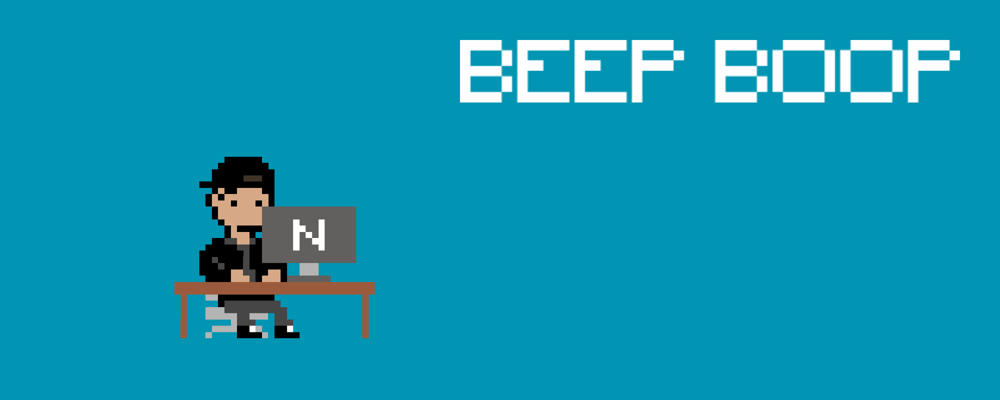

- Software Engineering Intern (12/2022 – 02/2023),
My time at Nasdaq
Disclaimer: Due to the private nature of my work, I have intentionally left out a few specific details.
Background
Roles held:
Funnily enough, my first corporate role in the finance industry made me interested in tech (product in specific) and after my experiences through AWS and my personal projects I wanted to fully equip my product toolbelt with a software development role. Fortunately, many recruiters had reached out to me from all sorts of places, and I found myself at Nasdaq to complete my summer internship.
Now, while I had learnt and utilised many aspects of the tech stack used, this was my very first fully development role – allowing me to better understand the structure in which development teams operate and communicate, the different tech used at a market leader within the fintech industry and how to combat/mitigate various issues that arise when dealing with high-volume market data.
Below I have outlined my major project.
Main Project
Role: Software Engineer Intern
API Scope for main project:
/favcount
Runs the favcount command to return a snapshot of the current total number of messages indicated in the .fav (identified by market code and trade date). Note that this command is used on incomplete favs for troubleshooting and progress checking. As this command could take a significant time to execute it will need to be implemented with an asynchronous design (eg return HTTP code 202 with an ID for polling the progress until results are ready).
Runs the favcount command to return a snapshot of the current total number of messages indicated in the .fav (identified by market code and trade date). Note that this command is used on incomplete favs for troubleshooting and progress checking. As this command could take a significant time to execute it will need to be implemented with an asynchronous design (eg return HTTP code 202 with an ID for polling the progress until results are ready).
/favdump
Runs the favdump command to query a .fav (identified by market code and trade date) and return the results of the query.
Runs the favdump command to query a .fav (identified by market code and trade date) and return the results of the query.
/filestat
Runs the filestat command to return the status of all files within the given range of dates and process configurations, including: Date last modified, File size, File type, and other items that I cannot disclose.
Runs the filestat command to return the status of all files within the given range of dates and process configurations, including: Date last modified, File size, File type, and other items that I cannot disclose.
and many more...
Tech stack: Python, JavaScript, Bash, AWS, AWS CDKs.
Measurement Metrics: runtime, and other internal Nasdaq tools.
A glimpse at the project is unavailable due to confidentiality agreements in which I am bound by due to the nature of the work.
